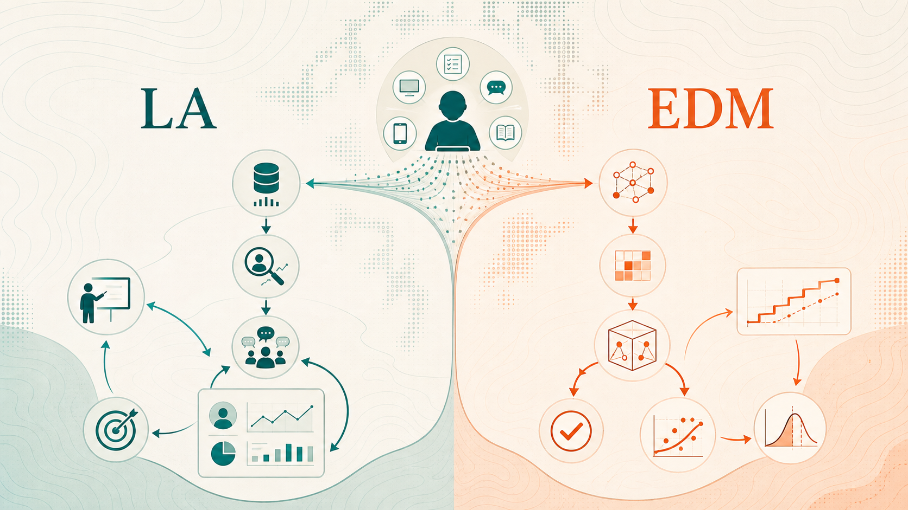
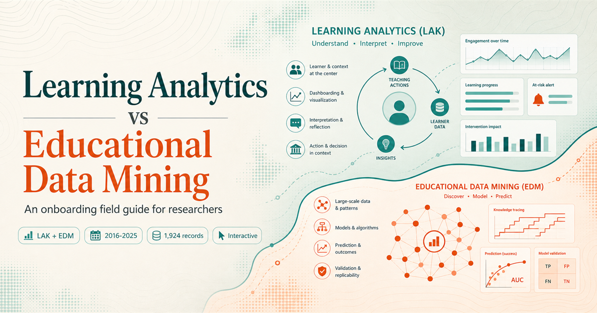
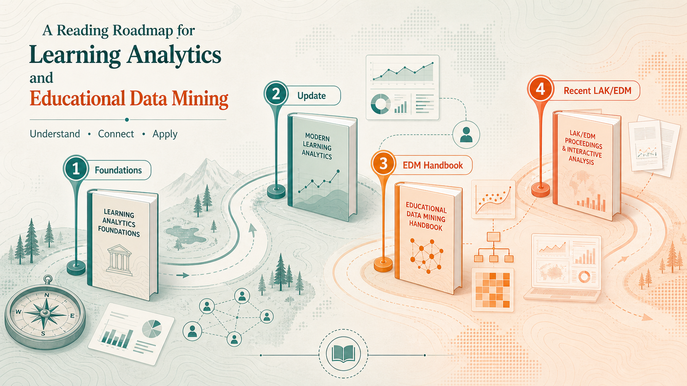
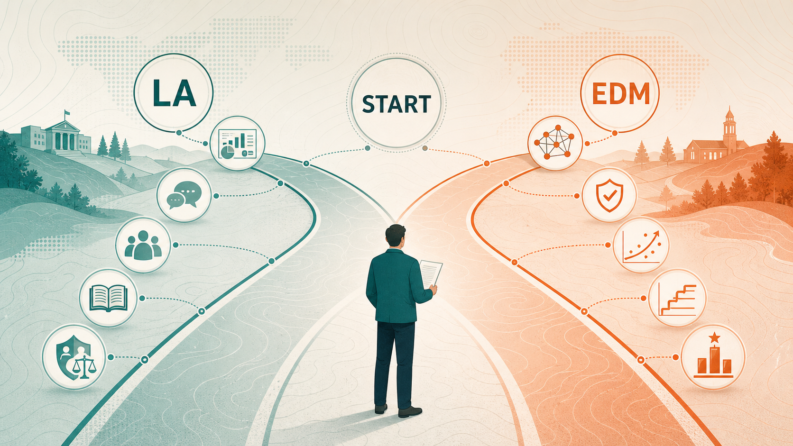
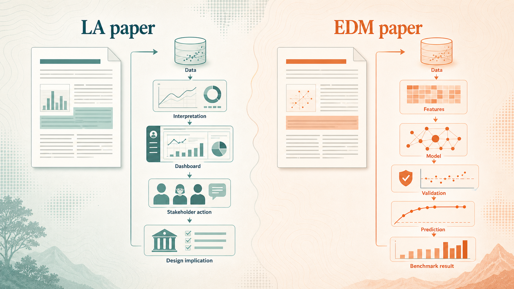
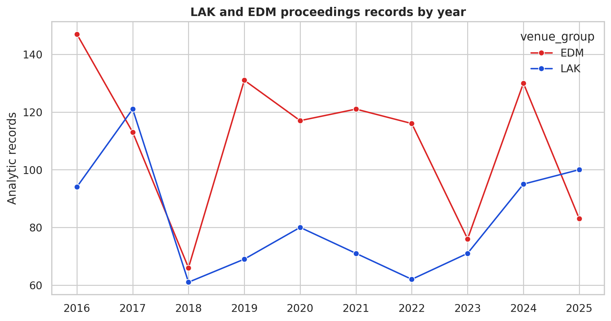
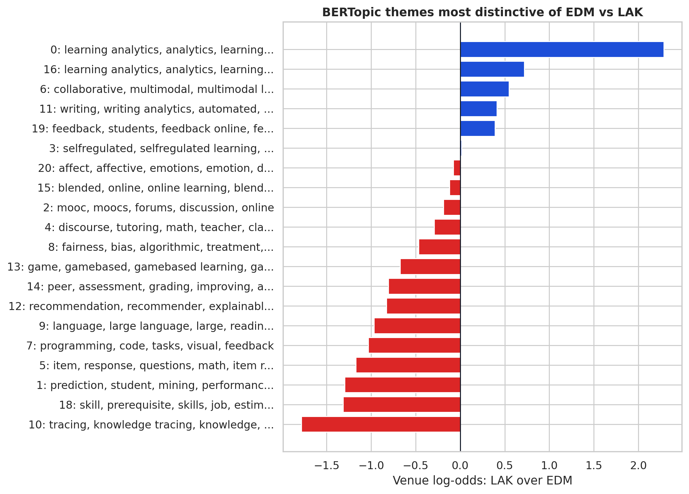
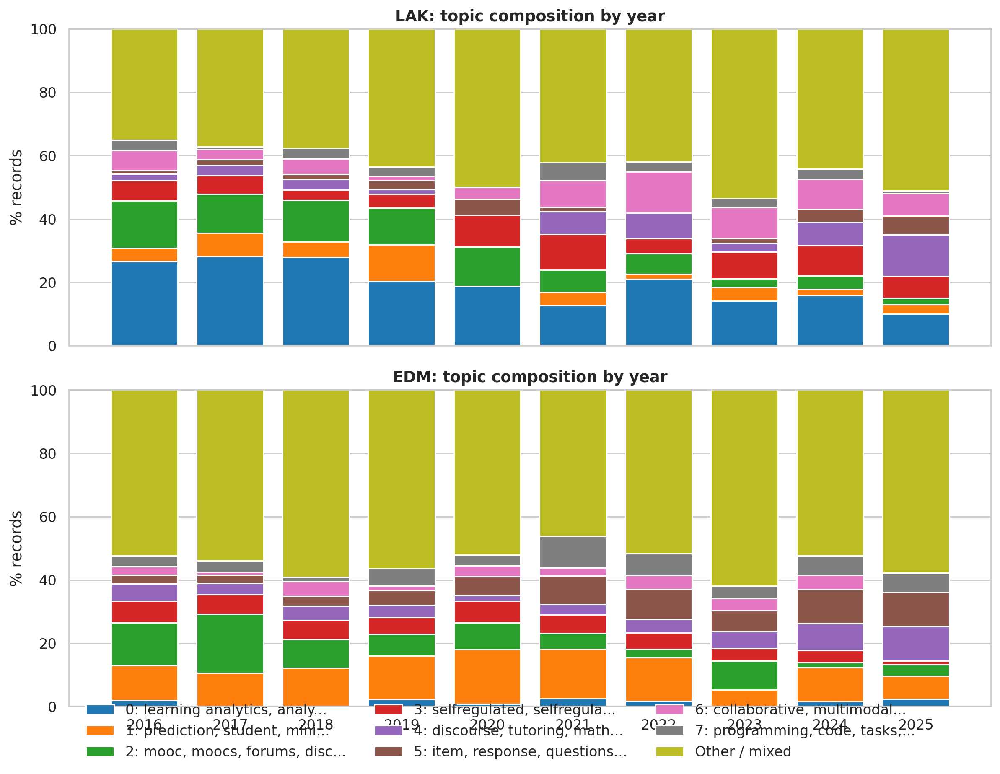

Learning Analytics and Educational Data Mining are neighboring fields, not synonyms.
This guide explains the difference for new researchers using a 2016-2025 proceedings corpus from LAK and EDM. The practical distinction is not only technical. LA asks how learning evidence becomes interpretation, design, and action. EDM asks how educational data can be modeled, inferred, predicted, and validated.
The fastest usable distinction
For onboarding, treat LA and EDM as two lenses on the same evidence ecosystem. They overlap in data sources, modeling methods, and educational problems, but they foreground different questions.
From data to pedagogical action
Learning Analytics is strongest when the contribution explains how data traces support interpretation, feedback, reflection, advising, dashboards, self-regulated learning, institutional decision-making, or learning design.
From data to validated models
Educational Data Mining is strongest when the contribution develops or evaluates models for prediction, knowledge tracing, assessment, recommendation, item response, tutoring systems, or algorithmic inference.

Evidence pipeline. Both fields begin with educational traces. LA turns traces toward interpretation, feedback, and design action; EDM turns traces toward features, models, validation, and inference.
Where Learning Analytics comes from
Learning Analytics grew around the problem of making digital traces useful for learning and teaching. SoLAR describes LA as collecting, analyzing, interpreting, and communicating learner data to provide theoretically relevant and actionable insights. That wording matters: LA is not just analysis. It includes interpretation, communication, theory, human-centered design, and the practical question of who can act on the evidence.
As a community, LA took shape through SoLAR and the International Conference on Learning Analytics and Knowledge, whose first conference was in 2011. Historically, LAK positioned the field at the intersection of learning sciences, educational technology, analytics, visualization, institutional research, and design. That is why LA papers often ask whether a dashboard, feedback loop, advising signal, or analytics intervention changes what learners, teachers, or institutions can see and do.
Where Educational Data Mining comes from
Educational Data Mining grew from data mining, machine learning, psychometrics, intelligent tutoring systems, student modeling, and large-scale educational log analysis. The International Educational Data Mining Society was founded in 2011, formalizing a community that had already been building methods for educational data, tutoring systems, and student modeling.
CMU DataLab's overview frames EDM around mining and analyzing data collected during teaching, validating findings at scale, predicting knowledge and dropout risk, and supporting adaptivity and personalization. That methodological origin explains why EDM papers often foreground model validity, prediction, knowledge tracing, item response, recommendation, algorithmic comparison, feature engineering, and benchmark-style evaluation. The educational goal remains important, but the center of gravity is usually the computational model and the evidence that it works.
Working thesis for a column
LA asks whether educational data becomes meaningful and actionable for learners, teachers, designers, or institutions. EDM asks whether educational data can be transformed into robust computational evidence. A strong hybrid paper makes both chains visible: model validity and educational actionability.

Field map. LA is framed as interpretation, communication, and action around learner data; EDM is framed as modeling, prediction, and validation over educational traces.
Why these became two fields
The distinction is easier to understand historically than by definitions alone. Both communities responded to the same shift: learning activity was moving into digital environments, producing traces at a scale that traditional classroom observation, testing, and institutional reporting could not fully use.
The shared trigger
LMS platforms, MOOCs, intelligent tutors, assessment systems, discussion forums, and clickstream logs made learning visible as event data. Both LA and EDM ask what can be learned from those traces, but they developed different answers about what counts as the central contribution.
LA's institutional and design pull
Learning Analytics formed around dashboards, feedback, advising, institutional decision-making, learning design, ethics, and stakeholder action. Its recurring problem is not only whether a model works, but whether evidence becomes meaningful to learners, teachers, designers, and organizations.
EDM's modeling and inference pull
Educational Data Mining formed around discovering patterns in educational data, building models of students and learning environments, and validating algorithms. Its recurring problem is not only whether data are actionable, but whether the computational evidence is robust, predictive, and reusable.
Community infrastructure
LAK's first conference was held in 2011, and SoLAR now frames Learning Analytics as an academic discipline and practice field concerned with collection, analysis, interpretation, and communication of learner data for theoretically relevant and actionable insight. The Journal of Learning Analytics extends that identity by emphasizing connections among researchers, developers, and practitioners.
EDM infrastructure
The International Educational Data Mining Society was founded in July 2011, after several years of EDM conference activity. IEDMS defines EDM as developing methods for exploring unique, increasingly large-scale educational data and using those methods to better understand students and learning settings. JEDM and the EDM conference series make the methodological community explicit.
Start here: HLA 2017
The first Handbook of Learning Analytics is useful for origin stories: theory, measurement, ethics, dashboards, predictive modeling, multimodal analytics, feedback, institutional adoption, and a critical LA/EDM chapter. It is the best first pass for seeing LA as a broad socio-technical field.
Then read: HLA 2022
The second edition updates the field after several years of growth. It is especially useful for newcomers who want modern coverage of predictive modeling, NLP, multimodal learning analytics, SRL, collaboration, teacher/student-facing analytics, fairness, policy, and human-centered feedback.
EDM baseline: 2010 handbook
The Handbook of Educational Data Mining gives the EDM baseline: classifiers, clustering, association rules, sequence/process mining, PSLC DataShop, q-matrices, skill models, Bayesian networks, recommendation, affect, validation, and case studies from intelligent learning environments.

Reading roadmap. Use the LA handbooks to understand the socio-technical field, then use the EDM handbook to understand the modeling tradition, then read recent LAK/EDM proceedings as current evidence of field movement.
Beginner reading rule
When reading a paper, ask what the paper wants credit for. If the paper wants credit for a better educational decision, feedback loop, stakeholder-facing representation, or learning-design implication, read it through an LA lens. If it wants credit for a better model, inference method, prediction, trace representation, or benchmark result, read it through an EDM lens. If it wants both, evaluate both chains separately.
How this dataset and analysis were built
This page is based on a reproducible metadata and title-level NLP workflow. The goal is onboarding and field comparison, not a final systematic review.
Define the corpus boundary
The scope is LAK 2016-2025 and EDM 2016-2025. Each venue-year was treated as a proceedings table of contents, not as a broad web search. This keeps the comparison bounded to two field conferences over the same ten-year window.
Extract DBLP metadata by table-of-contents facet
For each venue-year pair, the script queried the DBLP publication API with a TOC facet such as toc:db/conf/lak/lak2025.bht: or toc:db/conf/edm/edm2025.bht:. Stored fields include venue, year, title, authors, author count, pages, DBLP type, key, DOI when present, electronic edition URL, DBLP URL, access flag, and source query URL.
Remove obvious non-research records
The raw extraction contained 1,953 non-editorship records. A title-based analytic filter removed 29 obvious meta records containing terms such as workshop, tutorial, doctoral consortium, proceedings, front matter, preface, panel, keynote, and symposium. The final analytic corpus contains 1,924 records: 824 LAK and 1,100 EDM.
Create first-pass method and data-context tags
Title-keyword heuristics were used to mark broad method signals such as prediction/modeling, knowledge tracing, dashboard/visualization, NLP/discourse/text, multimodal/sensor, network/sequence/process, causal/experimental, LLM/GenAI, fairness/privacy/ethics, and learning design/SRL. Data-context tags include LMS/MOOC/logs, assessment/grades, collaboration/discourse, tutoring/intelligent systems, writing/text artifacts, multimodal/sensor, and dashboard/user study. These are directional screening tags, not final human-coded categories.
Run title-level semantic NLP
Paper titles were embedded with sentence-transformers/all-mpnet-base-v2. BERTopic was run over the precomputed embeddings using UMAP for dimensionality reduction, HDBSCAN for clustering, and c-TF-IDF for topic representation. The run produced 22 clusters including the outlier/mixed topic. Topic labels are c-TF-IDF top words, not generated claims.
Build comparative tables and interactive visuals
The page uses venue-year counts, method/data tag percentages, topic-by-venue counts, and selected topic-by-year counts. Counts are shown interactively so readers can inspect the difference between raw volume, within-venue signal, and topic distinctiveness.
State the interpretation boundary
The current evidence supports onboarding-level claims about field tendencies. It should not be cited as a publication-grade systematic review until abstracts or full texts are enriched through DOI/OpenAlex/Semantic Scholar/Crossref, and a stratified sample is human-coded for methods, data sources, educational setting, and contribution type.
Proceedings volume is uneven, so normalize claims
EDM has more analytic records in this extraction, but the difference changes by year. Interpret method or topic prevalence as percentages or within-venue patterns when possible.
EDM contributes more records overall in this ten-year extraction, especially in 2016, 2019-2022, and 2024. LAK is smaller in several years but reaches comparable or higher volume in 2017 and 2025. This means raw topic counts can mislead: a topic can look larger in EDM partly because the EDM corpus is larger. For field comparison, use within-venue percentages, distinctiveness ratios, and topic trajectories.
Method and data-context signals show the field personalities
These are conservative title-keyword heuristics. They are useful for onboarding and direction-finding, but not a substitute for abstract/full-text coding.
The method tags show the expected split without making it absolute. EDM has a larger prediction/modeling signal, while LAK has stronger learning design/SRL, dashboard/visualization, fairness/privacy/ethics, multimodal/sensor, and network/sequence/process signals. The data-context view adds nuance: EDM is more assessment/grades and tutoring/intelligent-systems heavy, while LAK is relatively stronger in LMS/MOOC/logs, dashboard/user-study, multimodal/sensor, and collaboration/discourse contexts.
Because many titles are uncoded, these bars should be treated as directional signals. They are best used to teach newcomers what to look for in abstracts, not to make final prevalence claims.
Semantic topics make the contrast sharper
MPNet + BERTopic over titles surfaces a recognizable split: LAK is more distinctive around learning analytics, dashboards, collaboration, multimodal learning, and writing analytics; EDM is more distinctive around prediction, knowledge tracing, item response, programming tasks, and recommendation systems.
The semantic topics show that the fields are organized around different prototypical contributions. LAK-distinctive topics are not merely "data analysis" topics; they are about analytics as a learning support infrastructure: dashboards, feedback, writing analytics, collaboration, multimodal learning, and learning analytics as a named field. EDM-distinctive topics are closer to educational machine learning and student modeling: prediction, knowledge tracing, item response, programming tasks, recommendation, and skill/prerequisite estimation.
The overlap is important. MOOCs, discourse, self-regulated learning, affect, and multimodal data appear in both fields. The difference is usually how the paper frames the contribution: actionability and sensemaking versus model development and validation.
Ten-year movement is best read topic by topic
The topic model is title-only, so trend claims should be phrased as signals, not final field history. Still, selected topics show useful onboarding patterns.
Use the trend explorer to avoid one-shot stereotypes. "Learning analytics / dashboards" is consistently LAK-centered, but not absent from EDM. "Prediction / performance" is consistently EDM-centered. "Collaboration / multimodal" becomes more visible in LAK after 2021. "Language models / reading" rises in both venues around 2024-2025, with stronger EDM counts in this title-only model. "Knowledge tracing" remains a clear EDM anchor, while LAK has occasional but smaller entries.
The right takeaway is field movement, not a fixed taxonomy. LA and EDM borrow methods from each other; what persists is the difference in rhetorical center: pedagogical action versus computational evidence.
Use this as a framing decision tool
For a new paper, proposal, or teaching module, choose the field framing by what the contribution must persuade readers to believe.

Framing map. If the contribution is a better decision, feedback loop, stakeholder representation, or learning design, foreground LA. If it is a better model, prediction, validation, or benchmark, foreground EDM.
LAK framing is stronger when...
EDM framing is stronger when...

Paper anatomy. LA papers tend to make the educational interpretation and action chain visible; EDM papers tend to make the modeling, validation, and benchmark chain visible.
What the current evidence can and cannot support
The guide is suitable for onboarding, blog writing, and scoping a deeper review. It is not yet a publication-grade systematic review.
Extraction method
Each venue-year query used DBLP's table-of-contents facet: toc:db/conf/<venue>/<venue><year>.bht:. The analytic filter removed title-marked workshops, tutorials, doctoral consortium items, front matter, prefaces, panels, keynotes, and symposium records.
Current limitations
BERTopic used titles only. Method and data-context tags are keyword heuristics. DOI coverage is partial: 823 records have DOI strings in the current DBLP extraction. Claims about "what the field believes" should be enriched with abstracts, author networks, venue tracks, and human-coded samples.
Static figure archive
The original PNG figures remain available for export or slides, but this page now treats the interactive charts as the primary reading surface.


